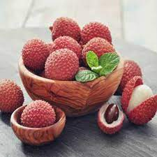
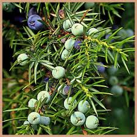
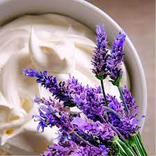

Cloudberry and Lychee
A fruity scent which exports you to a tropical island!
Top notes: lychee, peach, green leaves, lime, apple, pear and plum
Middle notes: Jasmine, lily and rose
Base notes: musk

Black Cedarwood and Juniper
A warm woody scent.
Top notes: cumin and chilli leaves
Middle notes: juniper
Base notes: dark cedarwood, sandalwood, moss and leather

Apple Berry Spice
A warm fruity scent, perfect for a cold winter’s night!
Top notes: cassis and raspberry
Middle notes: strawberry, blueberry, red apple, cinnamon and cherry
Base notes: sugar

Lavendar and Whipped Shea
A rich oriental floral scent.
Top notes: lavender and bergamot
Middle notes: violet, rose and lily, whipped shea
Base notes:patchouli, vanilla, amber and musk
Lavendar and Whipped Shea
A rich oriental floral scent.
Top notes: lavender and bergamot
Middle notes: violet, rose and lily, whipped shea
Base notes:patchouli, vanilla, amber and musk